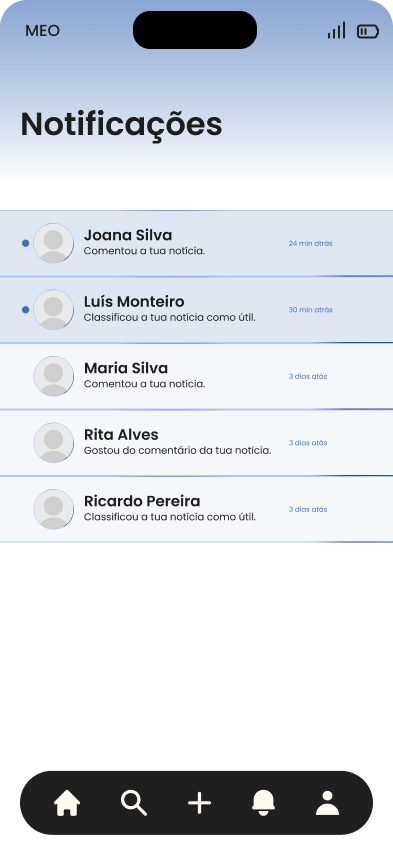
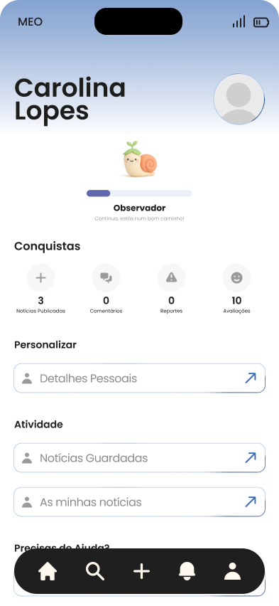

A Voz do Mondego is a local news app for the Mondego region — a place where readers can stay up to date with what's happening in their own communities, not just national headlines.
I designed and developed the front end independently: ten interconnected screens covering onboarding, a category-based news feed, article pages with threaded comments, a search experience with trending history, and a gamified user profile — all built as a mobile-first, single-view application.
There's no back end. A custom-built localStorage data layer acts as the application's database, storing user accounts, published articles, saved collections, comments, star ratings, utility votes, and reports, while dynamically calculating each author's reputation score.




Readers can publish news with photos, categories and text.
Comments include 1–5 ratings that shape author reputation.
Levels, titles and progress based on community activity.
Bookmark articles and clear the list anytime.
Recent searches and trending topics in one place.
Report content and vote on article usefulness.